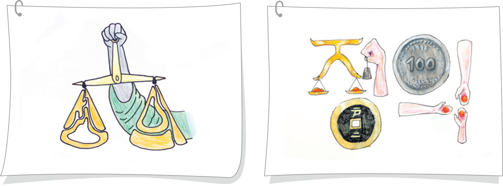

활동하기 정의로운 사회의 모습을 담은 정의 표현하기
● 모둠별로 조건을 참고하여 정의로운 사회의 모습을 생각하며 ‘정의’를 타이포그래피로 구성해 보자.
조건
1. 여러 획을 조합하여 ‘정의’라는 글자가 완성되도록 그린다.
2. 정의로운 사회의 조건을 한 가지 이상 반영한다.
⑴ 모든 사회 구성원에게 기본적 자유를 보장한다.
⑵ 한정된 기회나 자원을 공정하게 분배한다.
⑶ 법을 공정하게 집행한다.
⑷ 시민이 정의를 추구한다.
⑵ 한정된 기회나 자원을 공정하게 분배한다.
⑶ 법을 공정하게 집행한다.
⑷ 시민이 정의를 추구한다.
3. 구성하기 어려우면 예시를 참고한다.
● 모둠별로 조건을 참고하여 정의로운 사회의 모습을 생각하며 ‘정의’를 타이포그래피로 구성해 보자.
예시

● 모둠별로 조건을 참고하여 정의로운 사회의 모습을 생각하며 ‘정의’를 타이포그래피로 구성해 보자.
정의로운 사회의 모습은 시민이 자신의 권리와 의무인 투표권을 행사하고, 자신의 의견을 표현하는 사회라고 생각했습니다.